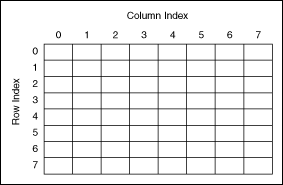

Use the array and cluster controls and functions to group data. Arrays group data elements of the same type. Clusters group data elements of mixed types.
An array consists of elements and dimensions. Elements are the data that make up the array. A dimension is the length, height, or depth of an array. An array can have one or more dimensions and as many as (231) � 1 elements per dimension, memory permitting.
You can build arrays of numeric, Boolean, path, string, waveform, and cluster data types. Consider using arrays when you work with a collection of similar data and when you perform repetitive computations. Arrays are ideal for storing data you collect from waveforms or data generated in loops, where each iteration of a loop produces one element of the array. You can export data from arrays to locations such as Microsoft Excel. Right-click an array and select Export from the shortcut menu to view available export options.
|
Note��Array indexes in LabVIEW are zero-based. The index of the first element in the array, regardless of its dimension, is zero. |
You cannot create arrays of arrays. However, you can use a multidimensional array or create an array of clusters where each cluster contains one or more arrays. Also, you cannot create an array of subpanel controls, tab controls, .NET controls, ActiveX controls, charts, multi-plot XY graphs, or multicolumn listboxes.
To locate a particular element in an array requires one index per dimension. In LabVIEW, indexes let you navigate through an array and retrieve elements, rows, columns, and pages from an array on the block diagram.
An example of a simple array is a text array that lists the eight planets of our solar system. LabVIEW represents this as a 1D array of strings with eight elements.
Array elements are ordered. An array uses an index so you can readily access any particular element. The index is zero-based, which means it is in the range 0 to n � 1, where n is the number of elements in the array. For example, n = 8 for the eight planets, so the index ranges from 0 to 7. Earth is the third planet, so it has an index of 2.
Another example of an array is a waveform represented as a numeric array in which each successive element is the voltage value at successive time intervals, as shown in the following illustration.
A more complex example of an array is a graph represented as an array of points where each point is a cluster containing a pair of numeric values that represent the X and Y coordinates, as shown in the following illustration.
The previous examples use 1D arrays. A 2D array stores elements in a grid. It requires a column index and a row index to locate an element, both of which are zero-based. The following illustration shows an 8 column by 8 row 2D array, which contains 8 � 8 = 64 elements.

For example, a chessboard has eight columns and eight rows for a total of 64 positions. Each position can be empty or have one chess piece. You can represent a chessboard as a 2D array of strings. Each string is the name of the piece that occupies the corresponding location on the board or an empty string if the location is empty.
You can generalize the previous 1D array examples to two dimensions by adding a row to the array. The following illustration shows a collection of waveforms represented as a 2D array of numeric values. The row index selects the waveform, and the column index selects the point on the waveform.
Refer to the labview\examples\Arrays\Arrays.lvproj for examples of using arrays.
 Open example�
Open example�
 Find related examples
Find related examples
Create an array control or indicator on the front panel by adding an array shell to the front panel, as shown in the following front panel, and dragging a data object or element, which can be a numeric, Boolean, string, path, refnum, or cluster control or indicator, into the array shell.

The array shell automatically resizes to accommodate the new object.
To create an array constant on the block diagram, select an array constant on the Functions palette, place the array shell on the block diagram, and place a string constant, numeric constant, a Boolean constant, or cluster constant in the array shell. You can use an array constant to store constant data or as a basis for comparison with another array.
To add a multidimensional array to the front panel, right-click the index display and select Add Dimension from the shortcut menu. You also can resize the index display until you have as many dimensions as you want. To delete dimensions one at a time, right-click the index display and select Remove Dimension from the shortcut menu. You also can resize the index display to delete dimensions.
To display a particular element on the front panel, either type the index number in the index display or use the arrows on the index display to navigate to that number.
For example, a 2D array contains rows and columns. As shown in the following front panel, the upper display of the two boxes on the left is the row index and the lower display is the column index. The combined display to the right of the row and column displays shows the value at the specified position. The following front panel shows that the value at row 6, column 13, is 66.
| 1 | Row index |
| 2 | Column index |
| 3 | Value at row, column |
Rows and columns are zero-based, meaning the first column is column 0, the second column is column 1, and so on. Changing the index display for the following array to row 1, column 2 displays a value of 6.
| 0 | 1 | 2 | 3 |
| 4 | 5 | 6 | 7 |
| 8 | 9 | 10 | 11 |
If you try to display a column or row that is out of the range of the array dimensions, the array control appears dimmed to indicate that there is no value defined, and LabVIEW displays the default value of the data type. The default value of the data type depends on the data type of the array.
Use the Positioning tool to resize the array to show more than one row or column at a time.
You also can use the scroll bars of an array to navigate to a particular element. Right-click the array and select Visible Items�Vertical Scrollbar or Visible Items�Horizontal Scrollbar from the shortcut menu to display scroll bars for the array.
|
Note��Array functions in LabVIEW access array data in row-major order. In a 2D array, row is the first, major index. Column is the last, minor index. In bigger multidimensional arrays, column remains the last index and the more major indexes are added to the front. Thus, vol is the first index, followed by page, row, and column. These names are index identifiers and have no other meaning. |
Use the Array functions to create and manipulate arrays. For example, you can perform tasks similar to the following:
Use the Build Array function to build an array programmatically. You also can use a loop to build an array.
Refer to the LabVIEW Style Checklist for more tips on minimizing memory usage when using Array functions in a loop.
The Index Array, Replace Array Subset, Insert Into Array, Delete From Array, and Array Subset functions automatically resize to match the dimensions of the input array you wire. For example, if you wire a 1D array to one of these functions, the function shows a single index input. If you wire a 2D array to the same function, it shows two index inputs�one for the row and one for the column.
You can access more than one element, or subarray (row, column, or page), with these functions by using the Positioning tool to manually resize the function. When you expand one of these functions, the functions expand in increments determined by the dimensions of the array wired to the function. If you wire a 1D array to one of these functions, the function expands by a single index input. If you wire a 2D array to the same function, the function expands by two index inputs�one for the row and one for the column.
The index inputs you wire determine the shape of the subarray you want to access or modify. For example, if the input to an Index Array function is a 2D array and you wire only the row input, you extract a complete 1D row of the array. If you wire only the column input, you extract a complete 1D column of the array. If you wire the row input and the column input, you extract a single element of the array. Each input group is independent and can access any portion of any dimension of the array.
The following block diagram uses the Index Array function to retrieve a row and an element from a 2D array.
To access multiple consecutive values in an array, expand the Index Array function, but do not wire values to the index inputs in each increment. For example, to retrieve the first, second, and third rows from a 2D array, expand the Index Array function by three increments and wire 1D array indicators to each subarray output.
Indexing beyond the bounds of an array produces the default value for the array element parameter. You can use the Array Size function to determine the size of the array.
You can index beyond the bounds of an array inadvertently by indexing an array past the last element using a While Loop, by supplying too large a value to the index input of an Index Array function, or by supplying an empty array to an Index Array function.
Clusters group data elements of mixed types. An example of a cluster is the LabVIEW error cluster, which combines a Boolean value, a numeric value, and a string. A cluster is similar to a record or a struct in text-based programming languages.
Bundling several data elements into clusters eliminates wire clutter on the block diagram and reduces the number of connector pane terminals that subVIs need. The connector pane has, at most, 28 terminals. If your front panel contains more than 28 controls and indicators that you want to pass to another VI, group some of them into a cluster and assign the cluster to a terminal on the connector pane.
Most clusters on the block diagram have a pink wire pattern and data type terminal. Error clusters have a dark yellow wire pattern and data type terminal. Clusters of numeric values, sometimes referred to as points, have a brown wire pattern and data type terminal. You can wire brown numeric clusters to Numeric functions, such as Add or Square Root, to perform the same operation simultaneously on all elements of the cluster.
Although cluster and array elements are both ordered, you must unbundle all cluster elements at once using the Unbundle function. You can use the Unbundle By Name function to unbundle cluster elements by name. If you use the Unbundle by Name function, each cluster element must have a label. Clusters also differ from arrays in that they are a fixed size. Like an array, a cluster is either a control or an indicator. A cluster cannot contain a mixture of controls and indicators.
Cluster elements have a logical order unrelated to their position in the shell. The first object you place in the cluster is element 0, the second is element 1, and so on. If you delete an element, the order adjusts automatically. The cluster order determines the order in which the elements appear as terminals on the Bundle and Unbundle functions on the block diagram. You can view and modify the cluster order by right-clicking the cluster border and selecting Reorder Controls In Cluster from the shortcut menu.
To wire clusters to each other, both clusters must have the same number of elements. Corresponding elements, determined by the cluster order, must have compatible data types. For example, if a double-precision floating-point numeric value in one cluster corresponds in cluster order to a string in the another cluster, the wire on the block diagram appears broken and the VI does not run. If the numeric values are different representations, LabVIEW coerces them to the same representation.
Use the Cluster, Class, & Variant VIs and functions to create and manipulate clusters. For example, you can perform tasks similar to the following:
Create a cluster control or indicator on the front panel by adding a cluster shell to the front panel, as shown in the following front panel, and dragging a data object or element, which can be a numeric, Boolean, string, path, refnum, array, or cluster control or indicator, into the cluster shell.
To create a cluster constant on the block diagram, select a cluster constant on the Functions palette, place the cluster shell on the block diagram, and place a string constant, numeric constant, a Boolean constant, or cluster constant in the cluster shell. You can use a cluster constant to store constant data or as a basis for comparison with another cluster.